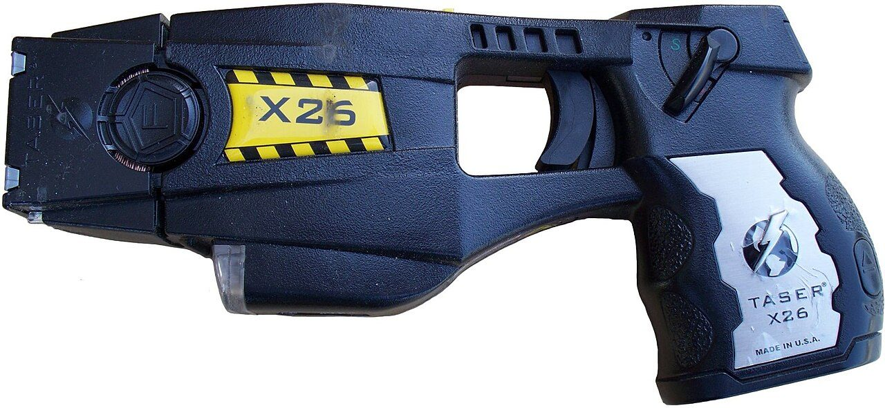

Photo : Junglecat, CC BY-SA 3.0 — Wikimedia Commons. Photo illustrative d'un objet ou véhicule réel du même type, pas une capture du jeu.
Équipement
Taser
EN UN COUP D'ŒIL
Statut🟡 Listé par la presse spécialisée, pas encore montré dans une vidéo officielle de Rockstar
Utile pourCombat non létalDiscrétion
Une arme non létale à impulsion électrique, qui immobilise sans tuer.
Et dans GTA V ?
Le pistolet paralysant (Stun Gun) existait déjà dans GTA V.
Nos conseils
- Utile quand une mission demande de ne pas faire de victimes.
- Portée courte : approche-toi sans te faire voir.
Objet cité dans les listes d'équipement publiées par la presse, mais pas encore montré par Rockstar dans une vidéo officielle : son existence et son fonctionnement restent à confirmer.
Sources : GTA6-News